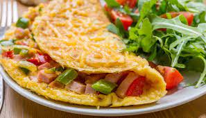

POR QUE SE ALIMENTAR BEM?
Se alimentar de forma saudável e equilibrada é essencial para garantir qualidade de vida. Isso porque, além de fornecer energia e bem-estar geral, através de uma boa alimentação é possível prevenir e combater doenças, manter o peso corporal saudável e ter um bom desenvolvimento físico. Também é muito importante se hidratar sempre.
“Pessoas desidratadas apresentam menor volume de sangue que o normal, o que acaba atrapalhando o funcionamento do coração. A falta de água pode causar fraqueza, tontura, dor de cabeça, fadiga e, se for muito prolongada, levar à morte.” Drauzio Varella
Uma alimentação saudável requer quantidades certas, sem exageros e sem exclusões e alimentos que forneçam ao corpo: proteínas, carboidratos, gorduras, fibras, cálcio vitaminas e outros minerais. A diversidade de grãos, verduras, legumes e frutas deve fazer parte das refeições do dia a dia. É importante também evitar o consumo de alimentos industrializados. Na maioria das vezes, eles são compostos de substâncias que prejudicam o nosso organismo, como corantes, conservantes, sódio e açúcar em grandes quantidades.


PARA UMA ROTINA MAIS SAUDÁVEL
- ▪ Prepare refeições com menos sal.
- ▪ Coma 1 a 2 porções de frutas por dia.
- ▪ Beba 2 litros de água diariamente.
- ▪ Evite consumo frequente de refrigerantes e sucos industrializados.
- ▪ Consuma legumes e verduras durante as refeições.
VAMOS ENTENDER MELHOR...
Vegana...
O veganismo é um movimento que visa promover os direitos e o bem-estar dos animais. Os veganos não utilizam nenhum tipo de alimento, vestuário, maquiagem, dentre outros que sejam derivados de animais em sua composição ou que tenham sido testados nestes. Em outras palavras, o veganismo é o movimento que busca libertar animais em todas as frentes possíveis, não só de mercado e alimentação, mas também de trabalho forçado e entretenimento.
Vegetariana...
Não se alimentam de carne, mas podem ou não, consumir produtos de origem animal. Existem diversas subcategorias, como os ovolactovegetarianos que não come nenhum tipo de carne (nem frango, porco, peixe ou frutos do mar), mas consome laticínios e ovos. Também tem os lactovegetarianos, além de excluírem todo tipo de carne da dieta, os lactovegetarianos também não comem ovos.
Outros...
Existe comidas saudáveis que leva carne em seu cardápio, com equilíbrio de quantidade, adicionas de legumes e verduras e atento a moderação, é posível consumir carne de maneira saudável. É importante:
- Investir em folhas verde escuras e frutas: por conterem ferro, as folhas podem ser consumidas em excesso nos dias sem carne.
- Consumir carne branca, no lugar da vermelha: peixes e frango contêm menos gordura.
- Substituir embutidos por opções mais saudáveis: além de ricos em sódio, os embutidos geralmente contêm muita gordura e conservantes.
- Conhecer opções de proteína vegetal: Feijão, amêndoas, castanhas, lentilha, grão de bico... Todos estes vegetais são ricos em proteína